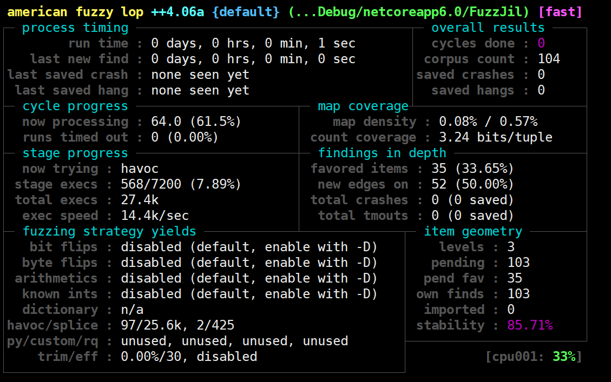

写在前面 最近到手一个项目，需要测试该项目是否有bug和检测程序健壮性。思来想去唯有fuzzing可以一举两得。因此开始了我为期一周的爬坑。作为一个freshman，从入门到放弃再到爬坑这一系列经历构成了这篇文章。由于关于C# fuzzing 环境搭建的文章特别少，因此写下这篇文章以供借鉴。
环境 本文环境是在Ubuntu22.04以及dotnet-SDK-6.0的环境中搭建。建议不要使用WSL，直接使用Vmware的虚拟机或者实体机搭建Ubuntu22.04。经过本人尝试，使用WSL进行Fuzzing的时候总是会，wsl出现自动死掉或者退出的情况，具体原因不明。最后本人使用的是实体机的Ubuntu22.04。
dotnet安装 在Ubuntu中可以通过apt直接安装。
apt-get install dotnet-sdk-6.0``` 1 2 3 4 5 6 7 8 9 10 11 12 13 14 15 16 17 18 19 20 21 22 23 24 可通过该命令行直接安装dotnet-6.0一系列库。 ## 安装SharpFuzz 这部分来自[ AFL-based fuzz testing for .NET](https://github.com/Metalnem/sharpfuzz) 下面是我的安装步骤 1、安装AFL++ 虽然SharpFuzz推荐的是AFL，但是当我使用AFL的时候总是会出现各种问题，最后导致不得不弃用AFL，换为[AFL++](https://github.com/AFLplusplus/AFLplusplus) ```shell sudo apt-get update sudo apt-get install -y build-essential python3-dev automake cmake git flex bison libglib2.0-dev libpixman-1-dev python3-setuptools cargo libgtk-3-dev # try to install llvm 12 and install the distro default if that fails sudo apt-get install -y lld-12 llvm-12 llvm-12-dev clang-12 || sudo apt-get install -y lld llvm llvm-dev clang sudo apt-get install -y gcc-$(gcc --version|head -n1|sed 's/\..*//'|sed 's/.* //')-plugin-dev libstdc++-$(gcc --version|head -n1|sed 's/\..*//'|sed 's/.* //')-dev sudo apt-get install -y ninja-build # for QEMU mode git clone https://github.com/AFLplusplus/AFLplusplus cd AFLplusplus make distrib sudo make install
在make的时候一定要保证自己shell能稳定访问github，里面有很多submodule，需要不断拉取一些子模块，而且这些子模块又非常大。
本人在make的时候因为网络一直不太稳定，在此处make了许久。
注意：在sharpfuzzz 中说，可以Patch AFL来避免插桩检测，但是这里不推荐，反正我尝试了很多次没成功。后续在使用时候直接用设置AFL_SKIP_BIN_CHECK=1来避免插桩检测。
2、安装sharpfuzz命令行
1 dotnet tool install --global SharpFuzz.CommandLine
该工具是用来给编译之后的DLL进行插桩。
本人在安装该命令行的时候是安装的2.0.1版本。也可以通过在后续添加参数--version 2.0.1来指定安装该版本
直接上例子 首先需要一个要想Fuzz的Library库，这里可以直接使用一个第三方库进行Fuzzing。这里选用Jil ，下面我们通过Nuget安装这个库。
然后编写一个调用Library的Fuzzing程序，这里给该项目命名为FuzzJil。
1 2 3 mkdir FuzzJil touch FuzzJil/Program.c FuzzJil/FuzzJil.csproj cd FuzzJil
编辑该工程的配置文件vim FuzzJil.csproj
1 2 3 4 5 6 7 <Project Sdk ="Microsoft.NET.Sdk" > <PropertyGroup > <OutputType > Exe</OutputType > <TargetFramework > netcoreapp6.0</TargetFramework > </PropertyGroup > </Project >
安装目标fuzzing的第三方库
1 dotnet add package Jil --version 2.10.0
安装关键SharpFuzz包，需要依靠这个框架去fuzzing
1 dotnet add package sharpfuzz --version 2.0.1
编辑Program.c
1 2 3 4 5 6 7 8 9 10 11 12 13 14 15 16 17 18 19 20 21 22 23 24 25 using System;using System.IO;using SharpFuzz;using Jil;namespace FuzzJil { public class Program { public static void Main (string [] args Fuzzer.OutOfProcess.Run(stream => { try { using (var reader = new StreamReader(stream)) { JSON.DeserializeDynamic(reader); } } catch (ArgumentException) { } catch (DeserializationException) { } }); } } }
这里的stream是标准输入流，这个代码就是从标准输入流读入字符，调用JSON.DeserializeDynamic()进行解析。代码后面的异常捕获会将得到的异常交给AFL报出crash.
注意：Fuzzer.OutOfProcess.Run参数为Action<stream>，一定不要调用非Fuzzing第三方库的API(这里也就是不要调用非Jil的API)，不然在fuzzing的时候就会出现No Instrument的错误。本人开始还没注意到这个问题，但是在经过多次失败和尝试之后意识到了这个问题。
进行编译
生成的文件会出现在./bin/Debug/netcoreapp6.0/目录中。
1 2 3 4 5 6 7 8 9 10 11 12 13 drwxrwxr-x 3 whalien51 whalien51 4096 3月 28 21:49 ./ drwxrwxr-x 3 whalien51 whalien51 4096 3月 28 21:49 ../ -rwxrw-r-- 1 whalien51 whalien51 1144320 12月 26 2019 dnlib.dll* -rwxr-xr-x 1 whalien51 whalien51 77208 3月 28 21:49 FuzzJil* -rw-rw-r-- 1 whalien51 whalien51 4313 3月 28 21:49 FuzzJil.deps.json -rw-rw-r-- 1 whalien51 whalien51 5120 3月 28 21:49 FuzzJil.dll -rw-rw-r-- 1 whalien51 whalien51 10480 3月 28 21:49 FuzzJil.pdb -rw-rw-r-- 1 whalien51 whalien51 139 3月 28 21:49 FuzzJil.runtimeconfig.json -rwxrw-r-- 1 whalien51 whalien51 402432 5月 11 2015 Jil.dll* drwxrwxr-x 2 whalien51 whalien51 4096 3月 28 21:49 ref/ -rwxrw-r-- 1 whalien51 whalien51 6144 5月 21 2019 SharpFuzz.Common.dll* -rwxrw-r-- 1 whalien51 whalien51 29184 1月 17 00:34 SharpFuzz.dll* -rwxrw-r-- 1 whalien51 whalien51 342528 1月 25 2015 Sigil.dll*
生成出来的文件我们需要关注Jil.dll 这个文件也就是我们即将fuzzing的第三方库，FuzzJil这个文件是编译出来的一个ELF的可执行文件，我们可以通过直接执行这个可执行文件，也就相当于执行上面Program.c编写出来的代码。SharpFuzz.dll就是通过Nuget安装的sharpfuzz那个包的动态连接库
试运行一下
1 2 dotnet run #或者是下面命令操作 ./bin/Debug/netcoreapp6.0/FuzzJil
没有回显不要惊慌，代码里面本身就没有回显代码。输入流没有关闭也不用惊慌，stream是通过调用Console.OpenStandardInput()打开的输入流，需要手动关闭，但是对于AFL来说，不需要关闭。这个试运行能跑起来，没有报错就行。
对第三方库进行插桩
1 sharpfuzz bin/Debug/netcoreapp6.0/Jil.dll
开始fuzzing
1 2 3 4 mkdir in #创建输入目录 vim in/1.json #将下面字符串写入文件 # {"menu" :{"id" :1,"val" :"X" ,"pop" :{"a" :[{"click" :"Open()" },{"click" :"Close()" }]}}} AFL_SKIP_BIN_CHECK=1 afl-fuzz -i in/ -o out bin/Debug/netcoreapp6.0/FuzzJil #开始fuzzing
如下图，AFL++启动，开始Fuzzing.

如果不想从标准输入流传入数据，想要从文件传入数据，则不用使用stream，需要从命令行参数传入文件路径。这个做法是来自AFL的做法。由于本人不了解Jil这个库，不知道直接解析json文件的API，下面的修改的Program.cs只是一个参考，并不能跑起来。本人只能用这个办法来表达出我的意思。
1 2 3 4 5 6 7 8 9 10 11 12 13 14 15 16 17 18 19 20 21 22 23 24 using System;using System.IO;using SharpFuzz;using Jil;namespace FuzzJil { public class Program { public static void Main (string [] args Fuzzer.OutOfProcess.Run(stream => { try { JSON.DeserializeDynamic(args[0 ]); } catch (ArgumentException) { } catch (DeserializationException) { } }); } } }
后续编译插桩等流程一致。
试运行
1 ././ bin/Debug/ netcoreapp6.0 /FuzzJil ./i n/1.json
插桩和上述一样，不多赘述。
开始Fuzzing
1 AFL_SKIP_BIN_CHECK=1 afl-fuzz -i in / -o out bin/Debug/netcoreapp6.0 /FuzzJil @@
后续加上@@来告诉AFL，需要传入文件。
关于传入文件做法是否靠谱，本人使用此方法fuzzing了一个自己编写的大项目，亲测有效。因为本人项目处于保密阶段，不方便展示。对于此项目的fuzzing也是促使我写下这篇文章。